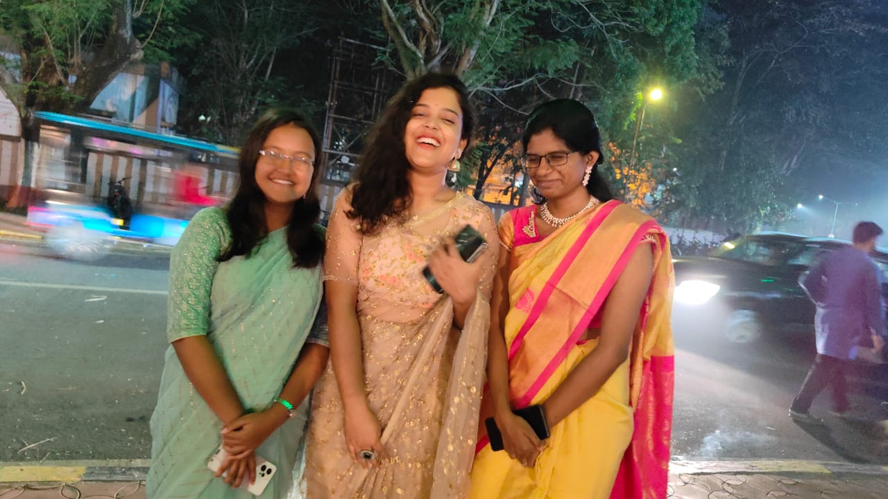
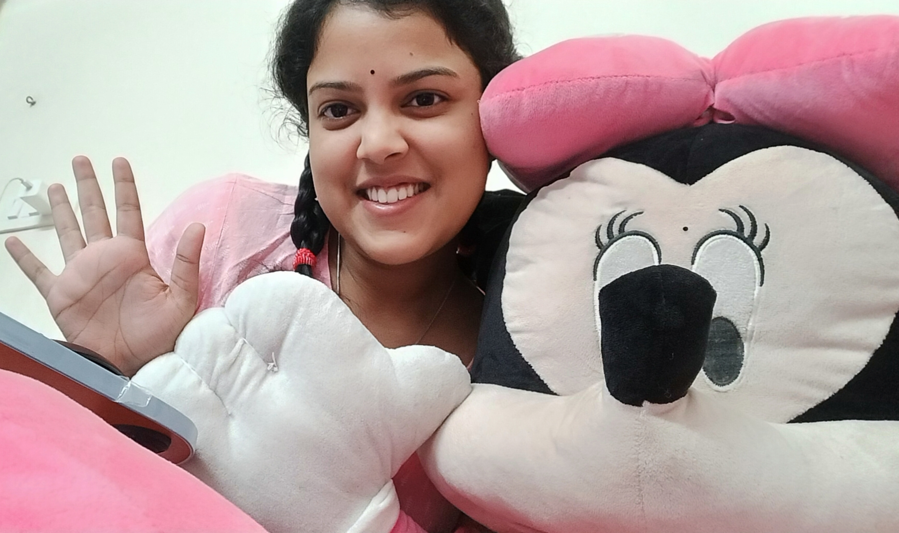
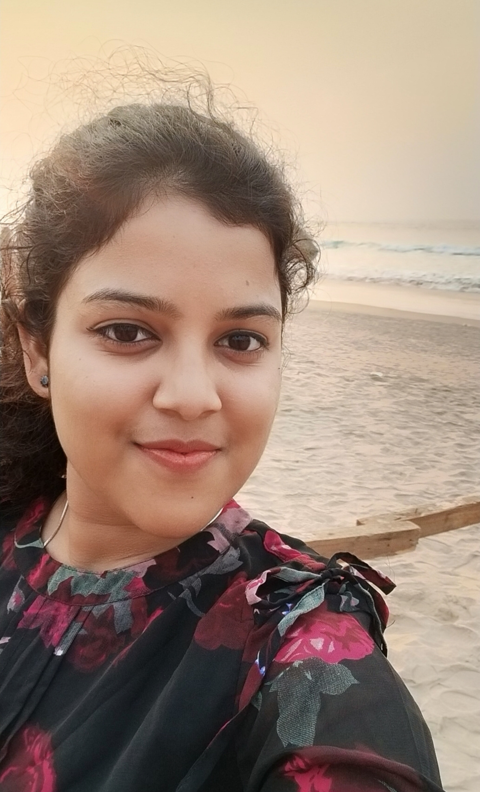

Hello everyone!I am Stitipragya.
I am a second year UG student of the renowned institution of IIT Kharagpur.
Learning and exploring is more fun when it becomes a hobby rather than just a habit. So,I love exploring and learning new stuffs from my talented batchies, friends, seniors and others who love sharing thoughts.
Finding happiness in small things is something special in me.
I dance out my emotions, excitement, joy and love, beacuse I dance
to express.


